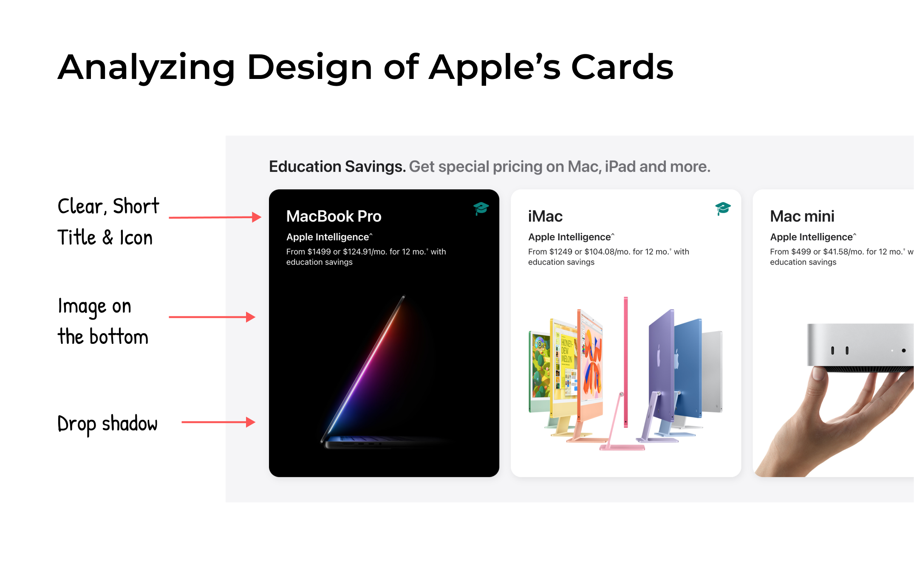
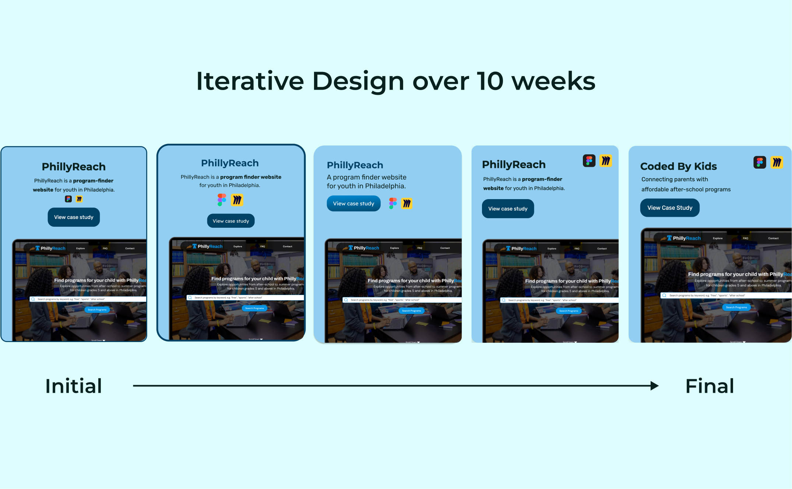
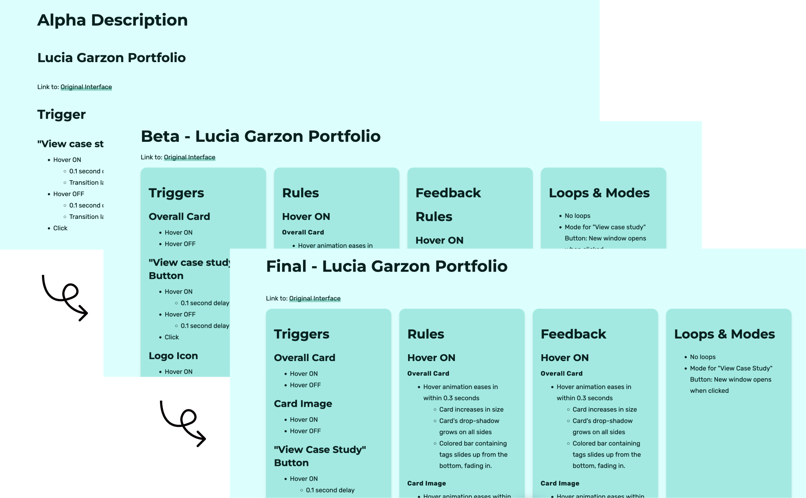
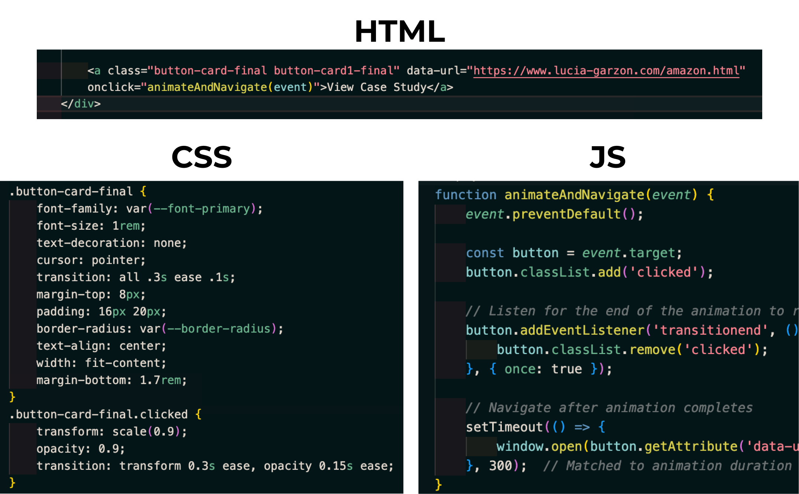
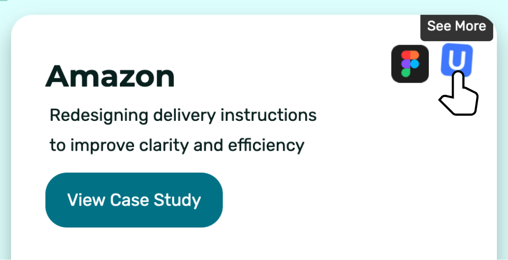

Student Project - Portfolio Cards
Link to: Original Interface
The Overview
This class project focused on designing an interactive and engaging set of microinteractions to showcase my work as a UI/UX designer and developer. By using microinteractions grounded in the 12 principles of animation, the aim was to enhance a portfolio's creativity and usability.
The final solution included hover effects, button animations, and seamless navigation cues that enhanced user engagement. The portfolio successfully demonstrated my design skills and received positive feedback from peers, marking it as a significant step in my professional growth.
Context & Challenge
Spanning 10 weeks, this solo project emerged from a need to craft a portfolio that not only showcased my technical and design skills but also reflected my creative approach to problem-solving.
Thus, the main challenge was to redesign the portfolio cards in my website, and incorporate microinteractions that enhanced usability without overwhelming the user—making the original portfolio a functional tool for job applications.
The goal of this project was to create polished, functional microinteractions that showcase meaningful interaction design while effectively utilizing front-end scripting languages. It aimed to implement layered interactions that are not only highly usable but also visually engaging and intuitive, offering a memorable experience worth sharing.
Throughout the course, concepts of animation principles, brand personality, and usability were given a general overview to help succeed in the aforementioned qualities considered successful for the project. As a solo project, I managed the end-to-end process, including design, development, and testing.
Process & Insight
The project began with research into the expectations of my target audience, which included hiring managers and creative collaborators. I analyzed portfolios from other designers to identify opportunities to stand out while ensuring usability remained central. In particular, learning from the cards in Apple'e website inspired my interactions as I aimed for a minimal, clear design.
Sketching out initial concepts and contiunally iterating as I submitted each coding assignment helped refine the visual hierarchy. As this project involved redesigning portfolio cards from my portfolio, I referenced the style guide I had previously set, while still keeping an eye on accessible typography, button sizes, color contrast and motion guidelines.
In the area of interaction design, I slowly incorporated more objects and ways to interact with them as the weeks progressed. Beyond showing my progress through code every 2 weeks, I made sure to explain the expectations for my microinteractions by clearly listing the triggers, rules, feedback, loops & modes for them.
The development phase involved using HTML, CSS, and JavaScript to bring the designs to life. Particular attention was paid to creating hover animations for cards and buttons that aligned with principles such as timing and easing.
Another lesson I kept in mind from the advice of my professor was integrating feedback animations after a click had been initiated by the user. Other than a cursor change, it's bad UX to have immediate feedback for an interactive object. For example, to give more time between clicking a logo icon on the card and being led to an external link (or a section in the case study), I added a feedback animation where the logo icon decreases in size, the opacity reduces, and the page navigation is delayed by 0.3 seconds before a new page is opened after the click.
Initially, I encountered a dilemma when designing a tooltip to appear next to my portfolio's logo icon. The default behavior was for the tooltip to display above the icon, but due to the image interaction in my card, the tooltip was clipped inside the card, cutting off some text. To resolve this, I decided to shift the tooltip to appear below the icon, ensuring better alignment and visibility. This adjustment ensured that the tooltip remained legible given the rules I set for the card.
Whether I was testing out changes myself through code or showing my progress to peers, I made sure to ask questions, search for solutions online, and make iterative changes based on feedback from others.
The Solution
The final design brought together a series of thoughtful microinteractions that make the original portfolio more dynamic and engaging.
The interactive project cards feature hover animations that enlarge the cards and increase their drop shadows, while hovering over its images creates a subtle zoom effect.
The "View Case Study" button provides users with immediate feedback through hover and click animations, creating a seamless transition between pages. Moreover, the button's click feedback animation demonstrates consistency across the design by matching the feedback animation that occurs when the logo icon is clicked.
Logo icons were given rotational and scaling animations to add playful personality, while tooltips provided additional context, leading users to view a section in the case study or an external link to a prototype.
Finally, a colored hover bar at the bottom of the card slides in to provide insight into the main areas of design I practiced in each case study.
Ultimately, these features worked together to create a cohesive experience balancing aesthetic appeal with usability. Thus, the portfolio cards were designed to be fully responsive, ensuring that these interactions worked seamlessly on both desktop and mobile devices.
The Results
The portfolio cards were a success and received positive feedback from peers for its modern, polished design. Compared to the original design of the portfolio cards, I feel confident that this new redesign combined with its exciting microinteractions will attract the eyes of employers. This project demonstrated my ability to combine creative design with technical execution, resulting in a set of microinteractions that not only display my work but actively engage users.
Some takeaways I learned from the project include the value of pacing yourself as a designer and developing ideas with continual feedback. We can never believe the first iteration or design is the best one, as user feedback always demonstrates areas and interactions to refine.
In the future, I plan to further explore advanced animations, and continue reading up on interaction design. Taking this class reminded me how much thought and testing goes into creating exceptional experiences. I find myself analyzing the microinteractions of whatever platform I am using now, and I am amazed by what I see.